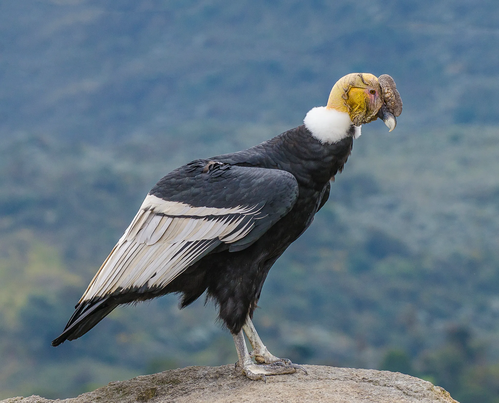
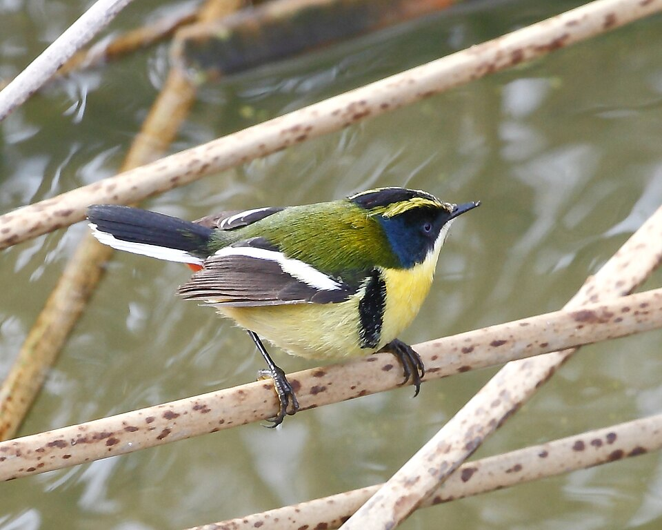
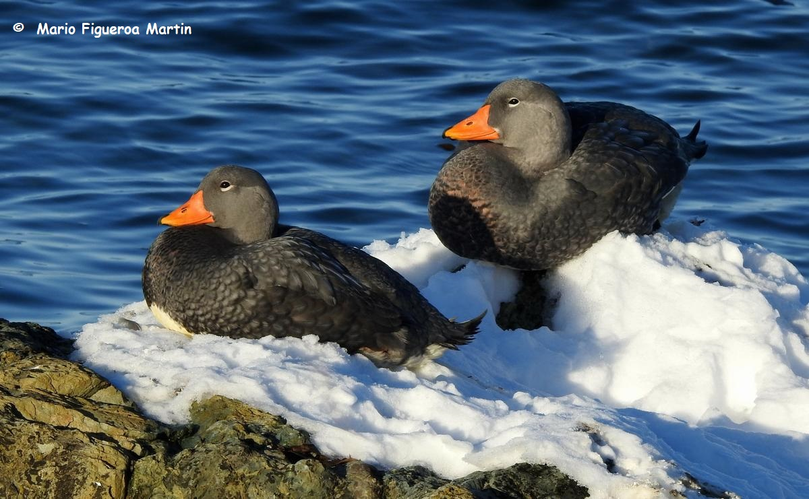
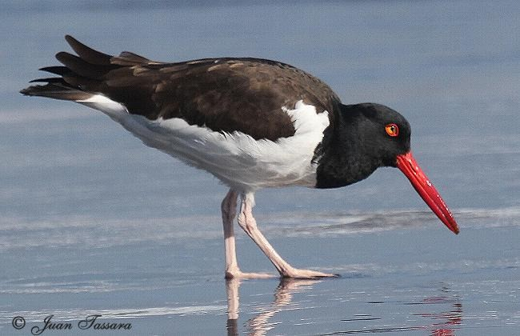
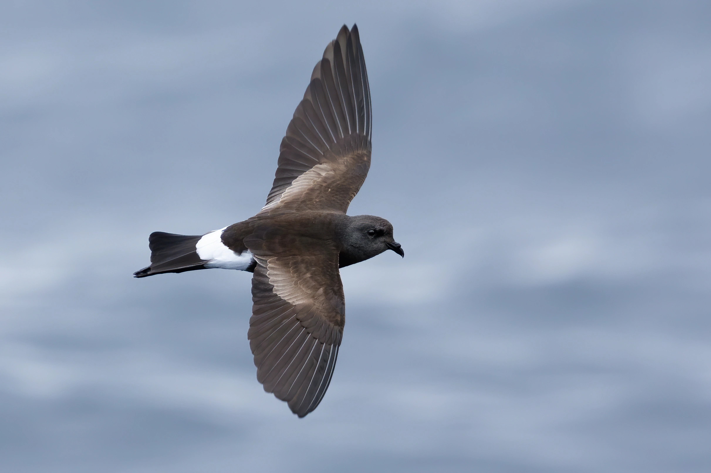

Condor
Vultur gryphusAvistamiento por:
Juan Pérez
Los Andes, Valparaíso
10-10-2017
|
 CondorVultur gryphusAvistamiento por: Los Andes, Valparaíso 10-10-2017 |
 Siete ColoresTachuris rubrigastraAvistamiento por: Castro, Los Lagos 15-09-2023 |
|
 QuetruTachyeres pteneresAvistamiento por: Punta Arenas, Magallanes 05-09-2024 |
 PilpénHaematopus palliatusAvistamiento por: Concón, Valparaíso 22-09-2012 |
|
 Golondrina de Mar BorealHydrobates leucorhsousAvistamiento por: Antártica, Magallanes 21-02-2016 |